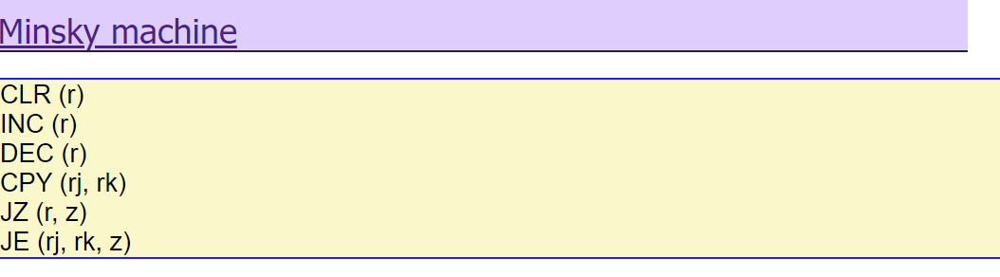
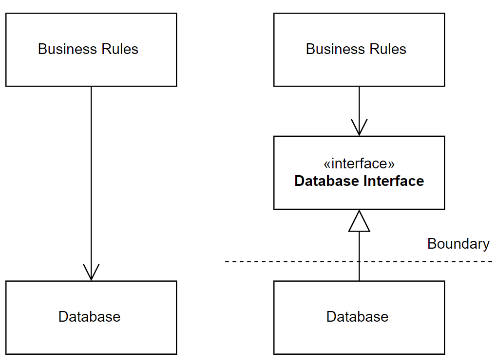
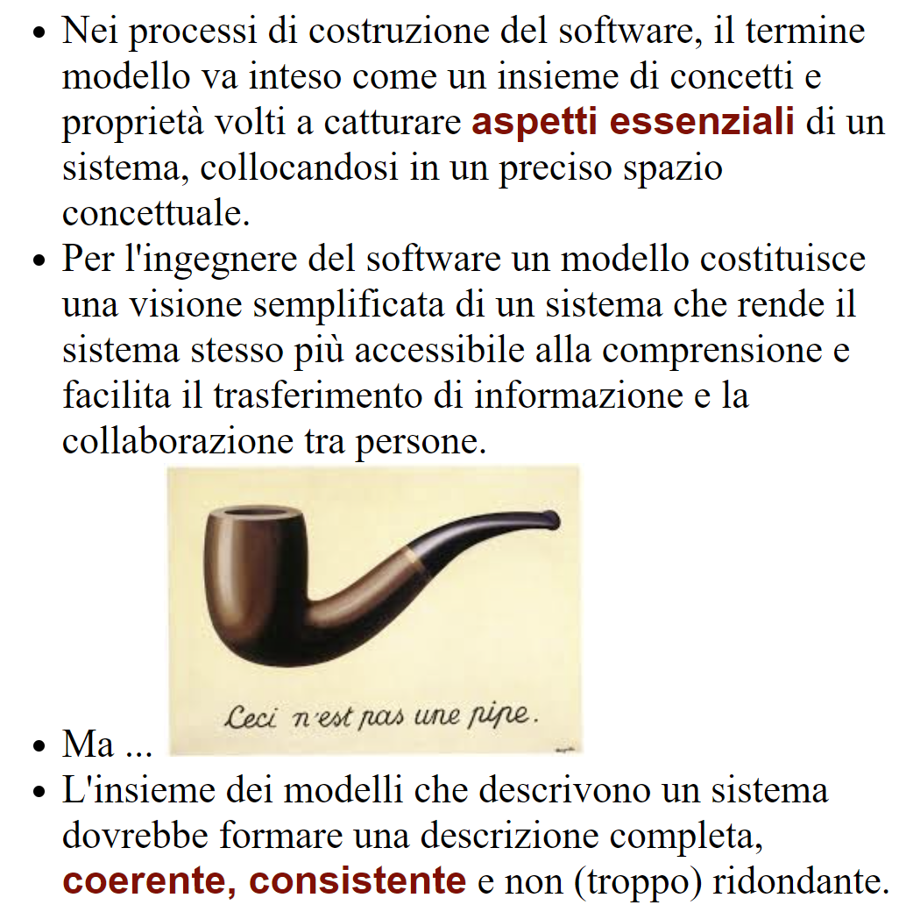
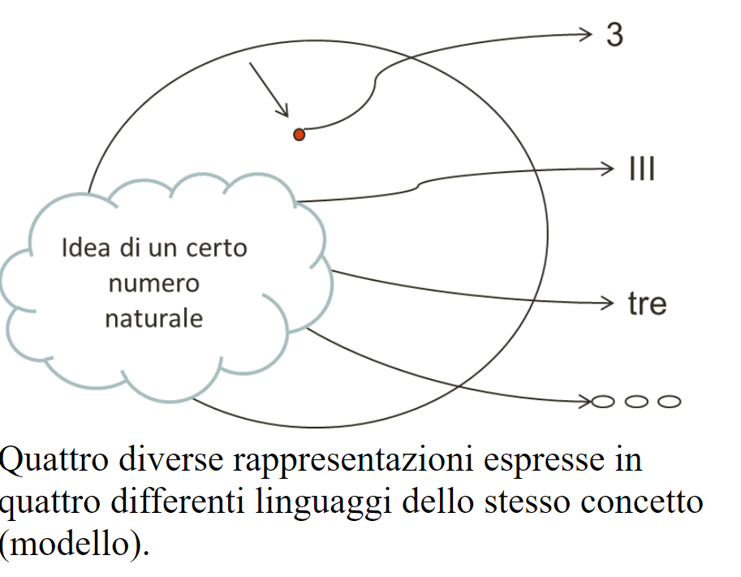

Principi¶
I Sistemi software¶
Un sistema può essere definito come l’unità fisica e funzionale, costituita da più parti o sottosistemi (organi, componenti o elementi ecc.) interagenti (o in relazione funzionale) tra loro (e con altri sistemi), che formano un tutt’uno in cui ogni parte dà il proprio contributo per una finalità comune.
A livello di sistema, si possono presentare , che non possono essere dedotte dai suoi sottosistemi, ma che .
Rispetto alla semplice denominazione di software, l’uso del termine sistema software enfatizza in genere prodotti software complessi, e che sono costruiti o studiati in termini di macro-componenti, della loro organizzazione e delle loro interazioni.
La struttura di un sistema software è anche detta architettura software.
Dimensioni¶
La descrizione di un sistema software può avvenire focalizzando l’attenzione su almeno tre diversi punti di vista:

|
|
Componenti software¶
Oggi è ormai scontata la transizione del software da una dimensioen di livello algoritmico a una dimensione di tipo sistemistico che vede come componenti entità quali:
funzioni
oggetti
processi
plugin, bundle …
attori
servizi
microservizi
Astrazioni di componenti software 
|
Astrazioni di interazione tra componenti software 
|
Per le figure è stato usato https://excalidraw.com/
Problematiche relative ai componenti¶
Come li individuo?
Come li metto insieme?
Come li rendo disponibili?
Come li trovo/seleziono dinamicamente?
Come li sostitusico?
Come ne controllo/monitoro il funzionamento?
Come specifico ciò che richiedono per funzionare?
Come li progetto?
Come li uso per costruire il sistema? (in modo top-down o botton-up?)
Quali Principi di costruzione posso adottare?
Interazione¶
Le interazioni tra oggetti avvengono tramite procedure-call, cioè a trasferimento di controllo.
Le interazioni tra componenti attivi possono avvenire trameite oggetti condivisi, allocati su memoria comune, oppure tramite messaggi che riguardano informazioni o stream di dati e che possono essere scambiati in forma sincrona, asincrona o isocrona.
In una interazione asincrona, la comunicazione è “bufferizzata” senza alcuna limitazione sulle dimensioni del buffer. L’emittente non deve attendere alcuna informazione di ritorno anche quando invia informazione ad uno specifico destinatario. Il ricevente attende solo quando il buffer è vuoto. Nel caso di stream, non vi sono vincoli di tempo per la ricezione.
In una interazione sincrona, la comunicazione avviene senza l’uso di alcun buffer. L’emittente e il desinatario scambiano informazione unificando concettualmente le proprie attività. Nel caso di stream, il destinatario si aspetta di ricevere i dati con un ritardo (delay) che non supera un massimo prefissato.
Una interazione isocrona riguarda solo stream; il destinatario si aspetta di ricevere i dati con un delay compreso tra un minimo e un massimo.
Le interazioni a messaggi vengono anche spesso suddivise secondo quattro pattern principali:
Fire and forget: il caso di invio di messaggi.
Sync with server: il caso request-response.
Poll objects: il sender invia una request delegando ad un oggetto (poll object) la responsabilità di ricevere la risposta. Il sender usa il poll object per verificare ed acquisire la disponibilità della risposta.
Result callback: il sender invia una request specificando un oggetto (callback object) che implementa un metodo che verrà invocato dal supporto non appena il receiver invierà la risposta.
Questi punti costituiscono il cuore del passaggio da OOP a message-passing.
Terminologia di riferimento¶
Faremo riferimento alla seguente terminologia:
Messaggio (message): termine generico per denotare informazione scambiata mediante l’uso di un opportuno supporto di comunicazione.
Dispaccio (dispatch): messaggio inviato in modo asincrono a N (N>=1) specifici destinatari, noti alla emittente, con l’aspettativa che questi lo ricevano e lo elaborino; l’emittente non si aspetta alcuna informazione di ritorno.
Invito (invitation): messaggio inviato a N (N>=1) destinatari, con l’aspettativa che almeno uno lo riceva e invii al mittente un messaggio di conferma.
Conferma (ack): messaggio inviato al mittente di un invitation. Il contenuto del messaggio rappresenta un riconoscimento di avvenuta ricezione.
Richiesta (request): messaggio inviato a uno specifico destinatario; il contenuto del messaggio rappresenta la richiesta di esecuzione di una attività, con aspettativa da parte del mittente che questa attività si concluda con una risposta pertinente alla richiesta.
Risposta (reply, response): messaggio inviato da un destinatario al mittente di una richiesta. il contenuto del messaggio rappresenta informazione pertinente alla richiesta.
Evento (event): messaggio emesso (più o meno consapevolmente) in modo asincrono da una sorgente senza alcuna particolare nozione di destinatario e senza alcuna aspettativa da parte dell’emittente.
Segnale (signal): messaggio emesso in modo consapevole e asincrono a N (N>=1) destinatari, noti o meno all’emittente, con l’aspettativa che venga ricevuto da qualcuno, al fine di eseguire un’azione che potrebbe portare vantaggio all’emittente, al ricevente e/o al sistema nel suo complesso.
Interazioni dal punto di vista applicativo¶
In un sistema distribuito:
I componenti-base sono enti attivi, che d’ora in poi possiamo denominare, genericamente, attori.
Gli attori non hanno memoria comune e scambiano informazione tramite messaggi.
Si distinguono diversi tipi di messggio, descritti nella Terminologia di riferimento. In sintesi:
enum ApplMessageType{ event, dispatch, request, reply, invitation}
dispatch: un messaggio inviato a un preciso destinatario senza attesa di una risposta (in modo detto anche fire-and-forget);
invitation: un messaggio inviato a un preciso destinatario aspettandosi un ‘ack’ da parte di questi;
request: un messaggio inviato a un preciso destinatario aspettandosi da parte di questi una reply logicamente correlata alla richiesta;
event: un messaggio inviato a chiunque sia in grado di elaborarlo.
I messaggi sono trasmessi e ricevuti tramite un qualche supporto fisico che permette scambio di informazione.
Gli attori di un sistema si conoscono grazie ai loro nomi e non attraverso l’uso di un particolare supporto di comunicazione.
La interazione tra attori è, di base, asincrona. Se un attore
Ainvia a un altro attoreBun messaggio request, allora:L’attore
Apotrebbe proseguire nella sua esecuzione e decidere di elaborare la reply in un secondo momento.Oppure,
Apotrebbe decidere di non fare altro prima della ricezione della reply.Un messaggio reply viene di norma inviato ad
AdaB, ma potrebbe anche accadere che venga inviato da un altro attoreC(delegato daB).
Un attore potrebbe emettere informazione senza un preciso destinatario. Noi denominiamo tale informazione come evento.
L’emissione di un event da parte di un attore rende l’attore osservabile, senza interferenze dirette da parte degli eventuali observer. Notiamo però che:
Un attore può anche essere reso osservabile se capace di rispondere a request di interesse da parte di altri attori.
Comportamento¶
Per esprimere il comportamento di un componente software, si distinguono classicamente tre diversi ‘stili’:
imperativo
funzionale
logico-dichiarativo
Il funzionamento di un componente comporta spesso l’individuazione di un insieme di , sulla base delle quali costruire ogni altra operazione di manipolazione/gestione del componente.
Si pensi per esempio al caso di un oggetto lista, le cui primitive
sono il costruttore cons, i selettori head, tail e il predicato empty. Un volta data la lista vuota (l’oggetto emptyList)
ogni lista può essere costruita e manipolata attraverso l’uso di queste primitive.
Spesso si qualifica il comportamento di un componente facendo riferimento a tipi diversi di macchine astratte, iniziando dalla Turing Machine (TM), che individua, in stile imperativo, le mosse-base (primitive) di un automa che permette di realizzare qualunque calcolo (!). |

Si veda Raspberry Pi TM |
Un automa equivalente che ottiene lo stesso risultato con una sorta di Linguaggio assembly minimale è la Minsky Machine (nota anche come Counter Machine) |
 |
{kind=link}
Un tipo meno potente di macchina astratta rispetto alla TM è il pushdown automaton (PDA) che però è l’automa di riferimento per il riconoscimento delle frasi di un inguaggio con sintassi context-free, di tipo 2 nella gerarchia di Chomsky .
Automi a stati finiti¶
Un ulteriore tipo di automa meno potente della TM, ma su cui si fonda sia la TM sia il PDA
è l’Automa a stati finiti (Finite State Machine - FSM)
il cui funzionamento può essere formalmente descritto da una 5-tuple (States, Inputs, Outputs, Transitions, InitialState):
States: insieme di possibili stati in cui l’automa si può trovare.
Inputs: insieme delle informazioni di ingresso, denotabili attraverso un input alphabet; nel nostro caso possiamo pensare che ogni simbolo dell’alfabeto denoti un messggio.
Outputs: insieme della informazioni di uscita, denotabili attraverso un output alphabet; nel nostro caso possiamo pensare che ogni simbolo dell’alfabeto denoti una azione.
InitialState: lo stato iniziale (unico) in cui l’automa si trova quando viene creato.
Transizione: definisce il nuovo stato e l’output dell’automa in funzione dello stato corrente e del simbolo corrente in ingresso. E’ spesso espressa da una coppia di funzioni:
nextState: States x Inputs -> States output: States x Inputs -> Outputs
Normalmente, gli automi a stati finiti si suddividono in due grandi categorie:
MealyMachines: una FSM il cui output è determinato sia dallo stato corrente sia dall’input corrente.
MooreMachines: una FSM il cui output dipende unicamente dallo stato corrente (
SCUR) in cui l’automa si trova.
FSM di tipo MooreMachines avranno per noi un ruolo fondamentale.
Quando l’automa si trova nello stato corrente SCUR:
esegue una sequenza (che deve terminare) di azioni;
al termine della sequenza di azioni controlla che vi sia almeno un input (messaggio) capace di attivare una delle transizioni verso un ulteriore stato (
SNEXT);attiva una delle transizioni possibili pasando dallo stato
SCURallo statoSNEXT(che potrebbe anche coincidere conSCUR);se non vi sono transizioni attivabili, rimane nello stato
SCURda cui potrà sbloccarsi solo in conseguenza di un ulteriore messaggio di input.
Principi di costruzione¶
Nel corso degli anni si sono imposti alla attenzione degli sviluppatori, alcuni principi, metodologie, schemi di riferimento etc. che aiutano nella progettazione e sviluppo di sistemi software.
Qui ne ricordiamo alcuni, che useremo nel seguito.
Design patterns¶
Agli anni 90 del secolo scorso risale l’idea di pattern, culminata nella pubblicazione
nel |

|
Da allora si sono susseguiti molte altre conferenze e lavori.
I riferimenti più noti sono i cinque testi |

|
SOLID¶
Dal sito Clean Architecture (Uncle Bob) leggiamo:
Single responsibility principle : una classe dovrebbe avere una, e una sola, ragione per cambiare.
Open-closed principle : una classe dovrebbe essere aperta per l’estensione ma chiusa per la modifica.
Liskov’s substitution principle : gli oggetti in un programma dovrebbero essere sostituibili con istanze dei loro sottotipi senza alterare la correttezza di quel programma.
Interface segregation principle : molte interfacce specifiche del client sono migliori di un’interfaccia generica.
Dependency inversion principle : si dovrebbe dipendere dalle astrazioni, non dalle implementazioni.
Dependency inversion¶
Se il codice sorgetne di un componente di alto livello dipende da quello di un componente di basso livello, i cambiamenti nei componenti di basso livello si diffonderanno al componente di alto livello. Pertanto, poniamo un confine tra i due, usando il polimorfismo per invertire il flusso logico.
Questo è il principio di inversione della dipendenza. Vediamo un esempio, preso da Clean Architecture:
|  | Le regole aziendali dipendono dall’interfaccia anziché dalla classe di database concreta. Il database diventa un plug-in delle regole aziendali: un componente di basso livello che può essere modificato senza influenzare le regole aziendali (componente di alto livello). |
{kind=link}
Architettura esagonale¶
L’architettura esagonale (anche nota come Port-Adapter) è, tra le tante veda Architetture di sistemi software oggi in uso, quella cui noi faremo particolare attenzione.

|
Si identificano quattro layer principali
|
12 Factor App¶
Una delle soluzioni oggi adottate per affrontare i problemi di operare su scala Web,
è la metodologia Twelve-Factor App, pubblicato nel 2011 da Adam Wiggins.
La 12 Factor App è un insieme di principi per la creazione di applicazioni software-as-a-service, che descrivono un modo di creare software che consente alle aziende di creare codice che può essere rilasciato in modo affidabile, ridimensionato rapidamente e mantenuto in modo coerente e prevedibile.
Codebase: Una sola codebase sotto controllo di versione, tanti deployment.
Dipendenze: Dipendenze dichiarate e isolate; nessun affidamento implicito su strumenti o librerie di sistema.
Configurazione: Memorizza le informazioni di configurazione nell’ambiente.
Baking service: I servizi di supporto vengono trattati come risorse collegate e scollegate dall’ambiente di esecuzione.
Costruisci, rilascia, esegui: Separare in modo netto lo stadio di build dall’esecuzione
Processi: Esegui l’applicazione come uno o più processi stateless. I dati persistenti sono archiviati su un servizio di supporto
Binding delle Porte: I servizi autonomi dovrebbero rendersi disponibili ad altri servizi tramite porte specificate.
Concorrenza: La concorrenza è sostenuta dal ridimensionamento dei singoli processi.
Disponibilità: Massimizzare la robustezza con avvii veloci e chiusure non brusche.
Parità Sviluppo/Produzione: Tutti gli ambienti dovrebbero essere il più simili possibile.
Log: Tratta i log come stream di eventi e lascia l’ambiente di esecuzione per l’aggregazione.
Processi di Amministrazione: Tutte le attività di amministrazione necessarie devono essere mantenute nel controllo del codice sorgente e incluse nel pacchetto dell’applicazione.
Si veda anche: 12FactorAppIllustrated
Linguaggi di programmazione¶
Costrutti per esprimere strutture (di dati e di controllo), forme di comportamento e meccanismi di interazione sono presenti in tutti i Linguaggi di programmazione.
Un punto importante consiste nel capire fino a che punto i costrutti di un linguaggio debbano influenzare il progettista (se non lo stesso analista). Fino alla fine degli anni 90 il linguaggio di programmazione è stato il veicolo principale per introdurre nuovi concetti sia sul piano computazionale sia sul sul piano della organizzazione del software.

|
La figura mostra una visione sintetica dello sviluppo nel tempo di questa evoluzione linguistica, con riferimento ad alcuni dei linguaggi più noti (in Linguaggi di programmazione si dice che oggi si usano più di 2500 linguaggi di programmazione). L’avvento della programmazione ad oggetti sembra avere segnato il culmine di questo processo; un motivo può certo essere il raggiungimento di una sufficiente maturità nella capacità espressiva in ciascuna delle Dimensioni citate. |
Sintassi astratta¶
Il motivo principale di una relativa (e solo apparente) stagnazione nello sviluppo di nuovi linguaggi, può essere ricondotto all’idea che un linguaggio non deve essere necessariamente accompagnato da una sintassi concreta ma può essere suffciente definire una sintassi astratta utilizzando un meta-linguaggio
Il Meta Programming System (MPS) di IntelliJ offre un editor (si veda Projectional editing) che costituisce una proiezione della sintassi astratta (AST) di un meta-linguaggio per la definizione di Domain Specific Languages (DSL).
Language-oriented programming è un paradigma di sviluppo del software che incoraggia esplicitamente gli sviluppatori a creare i propri DSL o ad estendere i linguaggi esistenti con concetti specifici del dominio.
Domain Specific Languages¶
Un Domain Specific Language (DSL) è un linguaggio che aumenta il livello di astrazione oltre la programmazione, utilizzando direttamente concetti e regole da uno specifico dominio del problema
Tra i vantaggi dell’uso di un DSL:
usando un DSL e un motore di trasformazione, il lavoro nel particolare aspetto dello sviluppo del software coperto dal DSL diventa molto più efficiente, perché il lavoro di colmare l’abstraction gap vine svolto dal motore di trasformazione;
l’uso di astrazioni specifiche del dominio può avvenire senza sovraccarico runtime, perché il motore di trasformazione, proprio come un compilatore, può rimuovere le astrazioni e generare codice efficiente;
il modo di pensare del progettista software diventa più chiaro perché il codice non è ingombrato dai dettagli dell’implementazione;
la logica dell’applicazione espressa nel codice DSL è indipendente dalla piattaforma di destinazione;
si promuove un’ottima integrazione tra gli svluppatori software e gli esperti del dominio.
Modelli¶
Nel linguaggio comune, il termine modello è spesso usato per denotare un’astrazione di qualcosa che esiste nella realtà, come ad esempio il modello che posa per un artista, una riproduzione in miniatura, un esempio di modo di svolgere un’attività, una forma da cui ricavare vestiti, un ideale da seguire, etc..
Alcuni (tra cui gli ingegneri) intendono per modello un sistema matematico o fisico che ubbidisce a specifici vincoli e che può essere utilizzato per descrivere e comprendere un sistema (fisico, biologico, sociale, etc.) attraverso relazioni di analogia.
|  |  |
{kind=link}
{kind=link}
Nel concepire un modello come visione semplificata di un sistema software si assume che il sistema abbia già una sua esistenza concreta. In alcune fasi di lavoro (in particolare nella fase di analisi) il sistema è il modello; un raffinamento o una variazione del modello corrisponde in questo caso ad una variazione del sistema.
La produzione esplicita di modelli si rivela utile in quanto i diversi attori di un processo di produzione di software (committenti, analisti, progettisti, utenti, etc) operano a diversi livelli di astrazione e con fini diversi.
Definendo opportuni modelli del sistema da realizzare, in ogni fase del processo di produzione l’attenzione può essere focalizzata sugli aspetti rilevanti in quella fase, utilizzando una forma di comunicazione comprensibile ad attori diversi. Per garantire coesione e interoperabilità, si cerca di individuare regole di corrispondenza e di trasformazione automatica tra modelli.
Linguaggi di (meta)modellazione¶
Un Linguaggio di modellazione è un Linguaggio formale che può essere utilizzato per descrivere (modellare) un sistema di qualche natura.
UML (Unified Modeling Language) è un linguaggio di modellazione e di specifica
di sistemi software basato sul paradigma orientato agli oggetti. Il linguaggio è definito in termini
di un linguaggio di meta-modellazione denominato MOF
(si veda Meta Object Facility) .

|
La Meta Object Facility di UML2 nella versione incorporata in Eclipse (denominata Ecore) può essere usata per definire un linguaggio che permette di esprimere sistemi software come oggetti attivi (attori) che interagiscono tra loro a scambio di messaggi si comportano come MooreMachines. |
Nel contesto dell’ingegneria del software, UML viene usato soprattutto per descrivere il dominio applicativo
di un sistema software e/o il comportamento e la struttura del sistema stesso.
Il modello è strutturato secondo un insieme di viste che rappresentano diversi aspetti della cosa modellata (funzionamento, struttura, comportamento e così via), a scopo sia di analisi sia di progetto, mantenendo la tracciabilità dei concetti impiegati nelle diverse viste.
Testing¶
L’obiettivo della fase di testing è quello di trovare il maggior numero di situazioni che conducono ad errori con il minimo numero di casi di prova. Un piano di testing ha di solito lo scopo di stabilire la gerarchia con cui i test vanno eseguiti, i metodi di esecuzione, i criteri di accettazione e prevede diverse tipologie di test, tra cui:
Unit test (Test di unità o di modulo) Ha l’obiettivo di individuare gli errori nel singolo modulo software.
Integration Test (Test di integrazione) Ha l’obiettivo di individuare gli errori nel software quando tutti i moduli che compongono un sottosistema o l’intero sistema vengono fatti lavorare assieme.
System Test (Test di sistema) Ha l’obiettivo di garantire che il prodotto software nel suo complesso soddisfi completamente i requisiti iniziali. E’ un collaudo interno.
User Acceptance Test (Test di accettazione) Ha l’obiettivo di valutare la rispondenza dell’applicazione software rispetto ai requisiti espressi inizialmente nel contratto e di ottenere l’accettazione formale del cliente di quanto realizzato. Il test viene effettuato dal cliente nel suo ambiente di test, e da un gruppo di utenti.
Alpha test e Beta test Un alpha test è un test preliminare di un’applicazione software anche non ancora completa, eseguito da alcuni potenziali utenti rappresentati da un team.
Un beta test ha l’obiettivo di far valutare al cliente, prima della distribuzione ufficiale del sistema, la reale funzionalità, completezza ed operatività dell’applicazione.
Regression Test (test di non regressione) Ha l’obiettivo di verificare a valle di una manutenzione, dopo che un bug è stato individuato e corretto e sono stati eseguiti esattamente gli stessi test che erano stati effettuati quando era stato individuato il problema.
Stress test (test di carico) Ha l’obiettivo di determinare il punto di rottura di un sistema software, oltre il quale si verificano instabilità del sistema, perdita dei dati o interruzione del servizio.
Sul problema del testing si trova moltissimo materiale in rete. Riportiamo qui alcuni riferimenti utili sul ‘piano pragmatico’:
Dal testing a DevOps¶
La fase di testing del software è attività imprescindibile per garantirne la qualità ed è anche indispensabile per garantire all’utente una user experience soddisfacente.
In Software testing IBM leggiamo che:
Negli anni ‘90 c’è stata una transizione dai test a un processo più completo denominato controllo di qualità, che copre l’intero ciclo di sviluppo del software e riguarda i processi di pianificazione, progettazione, creazione ed esecuzione di casi di test.
I test del software sono stati tradizionalmente separati dal resto dello sviluppo, ma molti team di sviluppo usano ora una metodologia nota come test continuo.
Il test continuo è parte dell’approccio DevOps, in cui sviluppo e operazioni collaborano per l’intero ciclo di vita del prodotto. L’obiettivo è quello di accelerare la fornitura del software, bilanciando al tempo stesso i costi, la qualità e i rischi.
Noi porremo particolare attenzione al fatto che la definizione di test (autmatizzabili) può essere vista come la formalizzazione delle User Stories e che l’uso dei modelli (esguibili) può permettere di anticipare questa formalizzazione fin dalle fasi di analisi.
Nella fase di analisi, l’obiettivo non è quello di eseguire dei test, ma quello di trovare il modo migliore per definire i test in modo che possano individuare in modo automatico le falle del software rispetto ai requisiti.
L’obiettivo di definire un TestPlan automatizzabile introduce di fatto un nuovo requisito: rendere l’applicazione osservabile, o meglio:
renderne verificabili, da parte di una macchina, gli effetti dell’applicazione.